Арт. 331113. Плотные брикеты — не торопить разжиг 15–20 минут, не лить жидкость и не раздувать сразу.
Угольные брикеты MIKA, 3 кг
Стартером (быстро)
Засыпаете брикеты сверху, снизу один-два спиртовых тюбика. Поджигаете. За счёт тяги в цилиндре схватываются равномерно за 15–20 минут.
«Домиком» без стартера
Колодец/шалашик из брикетов, внутрь — щепа или лучина. Или спиртовые тюбики на дно мангала и домик над ними. Главное — воздух снизу и 15–20 минут без спешки.
Спросите объём работ → подберите объём барабана. Рядом можно показать TORRA как альтернативу по цене/наличию.
Бетоносмеситель MIKA СM-1403311140YБетоносмеситель MIKA CM-1603311160YБетоносмеситель MIKA СМ-1803311180YБетоносмеситель MIKA СМ-2003311200Y
2T и 4T не взаимозаменяемы. Цепь / компрессор / ТАД-17 — только по назначению. Сверьте фасовку.
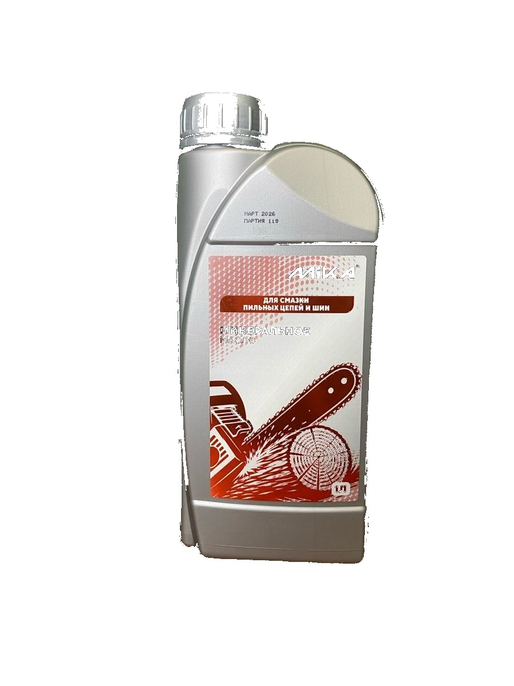
Масла MIKA
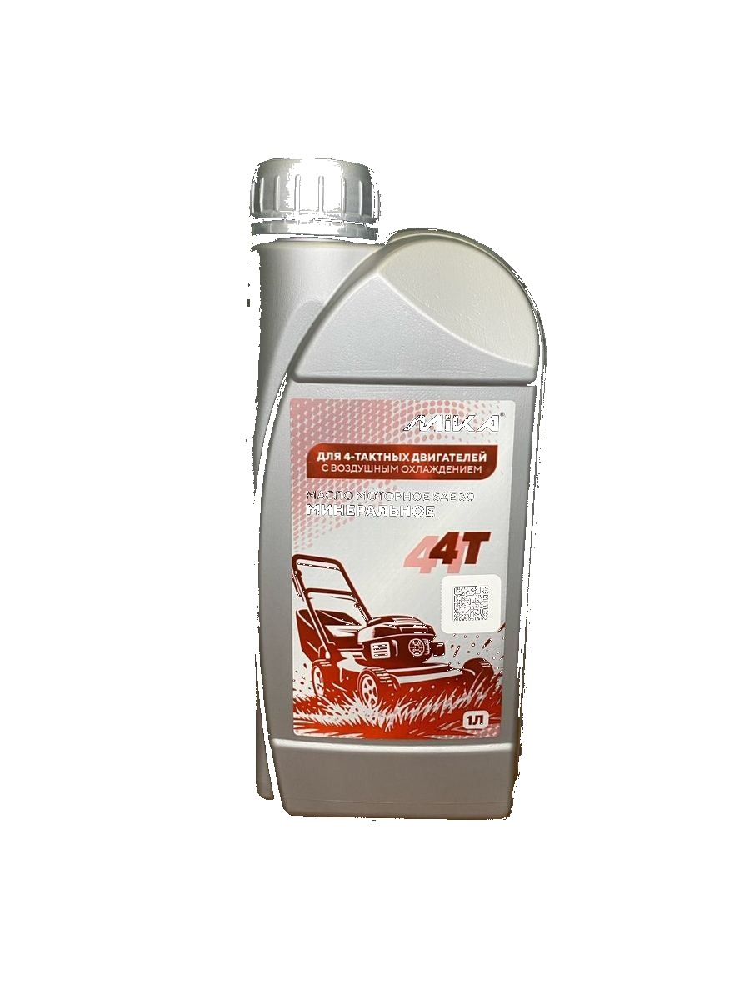
2T / 4T
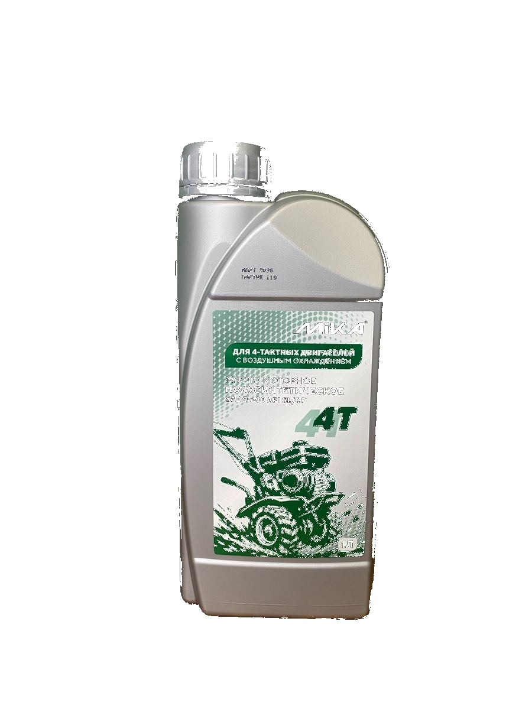
Цепь / спецмасла
Масло моторное минеральное для 2х тактных двигателей MIKA, 1 литр33483/1Масло моторное полусинтетическое для 2х тактных двигателей MIKA, 1 литр33482/1Масло моторное полусинтетическое для 2х тактных двигателей с дозатором MIKA, 1 литр33482/1ДМасло моторное минеральное для 4х тактных двигателей MIKA, 1литр33441/1Масло моторное полусинтетическое для 4х тактных двигателей MIKA, 1литр33442/1Масло трансмиссионное ТАД 17 MIKA, 1 литр33414/1Масло для поршневых компрессоров MIKA, 1 литр33425/1Масло для смазки цепей и шин MIKA, 1 литр33436/1Масло минеральное для 2х тактных двигателей 2T GARDEN Mika, 1л33483/1GМасло моторное минеральное для 2х тактных двигателей API TB, 100мл MIKA33483/01Масло моторное полусинтетическое для 2х тактных двигателей API TC, 100мл MIKA33482/01
Сначала задача: разбавить / обезжирить / защитить дерево / загрунтовать. Напомните про вентиляцию и перчатки.
Уайт спирит MIKA 0,5 л33757/05Уайт спирит MIKA 1 л33757/1Уайт спирит MIKA 5 л33757/5Уайт спирит MIKA 10 л33757/10Растворитель 646 MIKA 0,5 л33758/05Растворитель 646 MIKA 1 л33758/1Растворитель 646 MIKA 5 л33758/5Растворитель 646 MIKA 10 л33758/10Растворитель 650 MIKA 1 л33754/1Растворитель 650 MIKA 5 л33754/5Ацетон 1 л MIKA33753/1Ацетон 5 л MIKA33753/5Ацетон 10 л MIKA33753/10Сольвент MIKA 0,5 л33755/05Керосин ТС-1 MIKA 1л33752/1Керосин ТС-1 MIKA 5л33752/5
Обезжириватель
Перед покраской / склейкой металла и пластика.
Обезжириватель MIKA 0,5 л33756/05
Огнебиозащита
Для древесины: защита от огня и биопоражения. Напомните про группу защиты и расход.
Огнебиозащита для древесины MIKA ОГНЕБИО PROF, 2ая группа 10л3377310
Грунтовка
Глубокого проникновения — перед финишной отделкой. Сверьте объём 5 / 10 л.
Грунтовка глубокого проникновения MIKA 5 л канистра3391705Грунтовка глубокого проникновения MIKA 10 л канистра3391710
Под триммер: резьба/посадка и тип головки. Сразу предложите леску нужного диаметра.
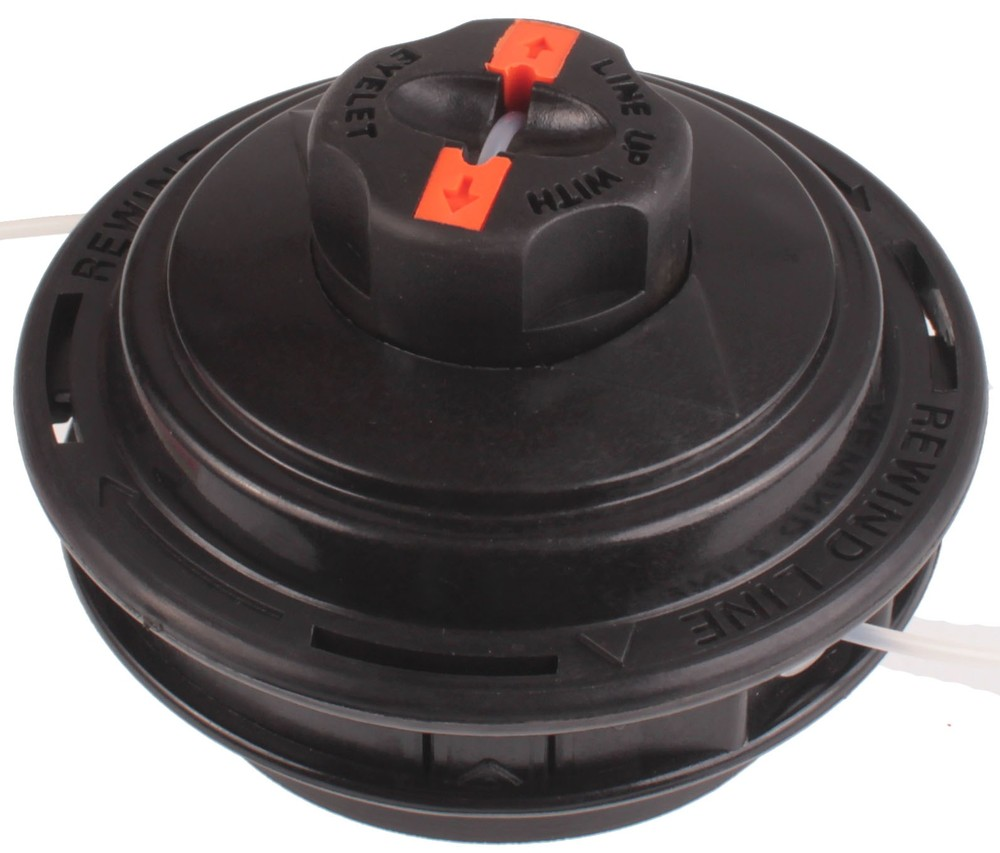
Катушка для триммера MIKA А002 М10*1.25 LF336638А002Катушка для триммера MIKA А003 М10*1.25 LF336638А003Катушка для триммера MIKA А005 М10*1.25 LF336638А005Катушка для триммера MIKA А012 М10*1.25 LF336638А012Катушка для триммера MIKA А014 М10*1.25 LF336638А014Катушка для триммера MIKA А019 М10*1.25 LF336638А019Катушка для триммера MIKA А034 М10*1.25 LF336638А034Катушка для триммера MIKA В010 М10*1.25 LF336638В010Катушка для триммера MIKA В021 М10*1.25 LF336638В021Катушка для триммера MIKA С010 М10*1.25 LF336638С010
Диаметр и профиль (круг / квадрат / звезда / семиугольник). Сверьте с катушкой и мощностью триммера.
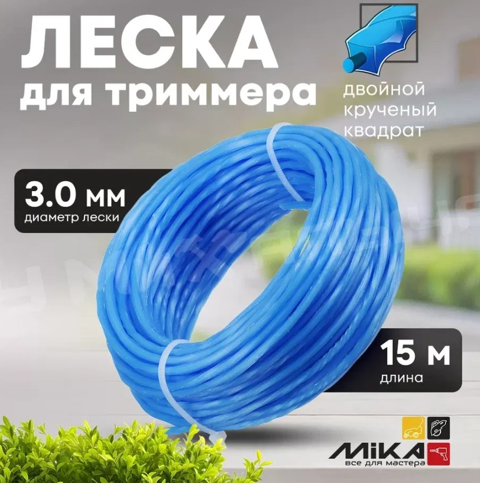
Леска для триммера 2.4*15м MIKA звезда бумага3366212415КЛеска для триммера 2.4*15м MIKA круг бумага3366222415КЛеска для триммера 3.0*15м MIKA звезда бумага3366233015КЛеска для триммера 3.0*15м MIKA круг бумага3366213015КЛеска для триммера 2.4*15м MIKA квадрат бумага3366222415КЛеска для триммера 1.3*15м MIKA круг бумага3366211315КЛеска для триммера 2.0*15м MIKA квадрат бумага3366222015КЛеска для триммера 2.4*15м MIKA семиугольник бумага3366242415КЛеска для триммера 2.0*15м MIKA двойной крученый квадрат бумага33662522015КЛеска для триммера 3.0*15м MIKA квадрат бумага3366223015КЛеска для триммера 3.0*15м MIKA семиугольник бумага3366243015КЛеска для триммера 1.3*15м MIKA крученый квадрат бумага33662121315КЛеска для триммера 2.4*15м MIKA звезда блистер3366232415ВЛеска для триммера 2.4*15м MIKA крученый квадрат блистер33662122415ВЛеска для триммера 3.0*15м MIKA двойной крученый квадрат блистер33662223015ВЛеска для триммера 2.0*15м MIKA круг блистер3366212015ВЛеска для триммера 3.0*12м MIKA двойной крученый квадрат блистер33662523012ВЛеска для триммера 2.4*15м MIKA круг блистер3366212415ВЛеска для триммера 3.0*15м MIKA крученый квадрат блистер33662123015ВЛеска для триммера 2.4*87м MIKA круг блистер3366212487ВЛеска для триммера 2.4*15м MIKA двойной квадрат блистер33662222415ВЛеска для триммера 2.0*15м MIKA звезда блистер3366232015ВЛеска для триммера 2.4*15м MIKA двойной круг блистер33662212415ВЛеска для триммера 2.4*15м MIKA круг с металлом блистер3366212415ВЛеска для триммера 2.4*95м MIKA звезда блистер3366232495ВЛеска для триммера 3.0*15м MIKA круг блистер3366213015ВЛеска для триммера 2.4*260м MIKA круг блистер33662124260В
Только маркировка MIKA. Сверьте тип, диаметр, длину и фасовку (кг / уп.).
Саморез потай оксид крупный шаг 3,5*32 (1кг/560шт.) MIKAСаморез потай оксид крупный шаг 3,5*35 (1кг/530шт.) MIKAСаморез потай оксид крупный шаг 3,5*41 (1кг/470шт.) MIKAСаморез потай оксид крупный шаг 3,5*45 (1кг/430шт.) MIKAСаморез потай оксид крупный шаг 3,5*51 (1кг/380шт.) MIKAСаморез потай оксид крупный шаг 3,5*55 (1кг/360шт.) MIKAСаморез потай оксид крупный шаг 3,8*65 (1кг/286шт.) MIKAСаморез потай оксид крупный шаг 4,2*70 (3,5*70) (1кг/244шт.) MIKAСаморез потай оксид крупный шаг 4,2*75 (1кг/233шт.) MIKAСаморез потай оксид крупный шаг 4,8*90 (4,8*90) MIKAСаморез потай оксид крупный шаг 4,8*100 (1кг/115шт.) MIKAСаморез потай оксид крупный шаг 3,5*51 (уп. 3 кг) MIKAСаморез потай оксид крупный шаг 3,5*55 (уп. 3 кг) MIKAСаморез потай оксид крупный шаг 3,8*65 (уп. 3 кг) MIKAСаморез потай оксид крупный шаг 4,2*70 (уп. 3 кг) MIKAСаморез потай оксид крупный шаг 4,2*75 (уп. 3 кг) MIKAСаморез потай оксид крупный шаг 4,8*90 (уп. 3 кг) MIKAСаморез потай оксид крупный шаг 4,8*100 (уп. 3 кг) MIKAСаморез потай оксид крупный шаг 4,8*127 (уп. 3 кг) MIKAСаморез потай оксид крупный шаг 4,8*152 (уп. 3 кг) MIKAСаморез потай оксид крупный шаг 3,5*16 (уп. 1 кг) MIKAСаморез потай оксид крупный шаг 3,5*19 (уп. 1 кг) MIKAСаморез потай оксид крупный шаг 3,5*25 (уп. 1 кг) MIKAСаморез потай оксид крупный шаг 3,5*32 (уп. 1 кг) MIKAСаморез потай оксид крупный шаг 3,5*35 (уп. 1 кг) MIKAСаморез потай оксид крупный шаг 3,5*41 (уп. 1 кг) MIKAСаморез потай оксид крупный шаг 3,5*45 (уп. 1 кг) MIKAСаморез потай оксид крупный шаг 3,5*51 (уп. 1 кг) MIKAСаморез потай оксид крупный шаг 3,5*55 (уп. 1 кг) MIKAСаморез потай оксид крупный шаг 3,8*65 (уп. 1 кг) MIKAСаморез потай оксид крупный шаг 4,2*70 (уп. 1 кг) MIKAШуруп универсальный цинк белый 3,0*12 MIKAШуруп универсальный цинк белый 3,0*30 MIKAШуруп универсальный цинк белый MIKA 3,5*16Шуруп универсальный цинк белый 3,5*30 MIKAШуруп универсальный цинк белый MIKA 4,0*16Шуруп универсальный цинк белый MIKA 4,0*30Шуруп универсальный желтый цинк 4,0*45 MIKAШуруп универсальный желтый цинк 4,0*60 MIKAШуруп универсальный желтый цинк 4,0*70 MIKAШуруп универсальный желтый цинк 4,5*30 MIKAШуруп универсальный желтый цинк 4,5*35 MIKAШуруп универсальный желтый цинк 4,5*40 MIKAШуруп универсальный желтый цинк 4,5*45 MIKAШуруп универсальный желтый цинк 4,5*50 MIKAШуруп универсальный желтый цинк 4,5*60 MIKAШуруп универсальный желтый цинк 4,5*70 MIKAШуруп универсальный желтый цинк 4,5*80 MIKAШуруп универсальный желтый цинк 5,0*100 MIKAШуруп универсальный желтый цинк 5,0*40 MIKAШуруп универсальный желтый цинк 5,0*50 MIKAШуруп универсальный желтый цинк 5,0*70 MIKAШуруп универсальный желтый цинк 5,0*80 MIKAШуруп универсальный желтый цинк 5,0*90 MIKAШуруп универсальный желтый цинк 6,0*120 MIKAШуруп универсальный желтый цинк 6,0*160 MIKAШуруп универсальный желтый цинк 6,0*70 MIKAШуруп универсальный желтый цинк 6,0*90 MIKAСаморез кровельный по металлу цинк 5,5*19 MIKAСаморез кровельный по металлу MIKA 5,5*25 цинкСаморез кровельный по металлу MIKA 5,5*19 RAL 8017Саморез кровельный по дереву MIKA 4,8*29 RAL 8017Саморез кровельный по дереву MIKA 4,8*35 RAL 8017Саморез кровельный по металлу MIKA 5,5*19 RAL 7024Саморез кровельный по дереву MIKA 4,8*29 RAL 7024Саморез кровельный по металлу MIKA 5,5*19 RAL 6005Шайба увеличенная оцинкованная d 6 DIN9021 MIKAШайба увеличенная оцинкованная d 8 DIN9021 MIKAШайба увеличенная оцинкованная d 10 DIN9021 MIKAШайба увеличенная оцинкованная d 12 DIN9021 MIKAШайба увеличенная оцинкованная d 14 DIN9021 MIKAШайба увеличенная оцинкованная d 16 DIN9021 MIKAГайка оцинкованная М8 DIN934 MIKAГайка оцинкованная М6 DIN934 MIKAГайка оцинкованная М10 DIN934 MIKAГайка оцинкованная М12 DIN934 MIKAГайка оцинкованная М14 DIN934 MIKAГайка оцинкованная М16 DIN934 MIKAБолт оцинкованный с полной резьбой М6*20 DIN933 MIKAБолт оцинкованный с полной резьбой М8*20 DIN933 MIKAБолт оцинкованный с полной резьбой М8*25 DIN933 MIKAШпилька резьбовая оцинкованная кл.п. 8,8 12*1000 DIN975 MIKAШпилька резьбовая оцинкованная кл.п 8,8 10*1000 DIN975 MIKAШпилька резьбовая оцинкованная кл.п 8,8 16*1000 DIN975 MIKAШпилька резьбовая оцинкованная кл.п 8,8 8*2000 DIN975 MIKAШпилька резьбовая оцинкованная кл.п 8,8 14*1000 DIN975 MIKA
Как подбирать биты MIKA
Шлиц — PH (крестовой Philips), PZ (Pozidriv). PH2 / PZ2 — самые ходовые для саморезов.
Длина — 50 мм для обычной работы; 70–90 мм, если нужен вылет или работа в углублении.
Одна сторона или две — двухсторонние удобны «в кармане»; односторонние — в держатель/набор.
Под инструмент — к шуруповёрту / INALL; для ударного режима лучше торсионные.
Цвет / покрытие — для чего
Красные торсионные — усиленные, пружинят при ударе/перекосе. Для ударных шуруповёртов и плотных саморезов (каркас, металл к дереву).
Коричневые двухсторонние — повседневная работа, два рабочих конца PH2/PH2. Для мебели, гипсокартона, общего монтажа без сильного удара.
Чёрные двухсторонние торсионные — та же двухсторонность + торсион. Когда нужен запас прочности, но удобство «перевернул — работаешь».
С магнитным ограничителем — фиксирует глубину усадки самореза (гипсокартон, чистовая отделка), меньше срыва шлица и «утопления» шляпки.
Обычные PH / PZ — базовый расходник под частую замену; берите по шлицу и длине.
Магнитные головки 8 / 10 / 13 / 17 — под болты/гайки и саморезы с шестигранной головкой; магнит держит метиз.
Наборы 41 / 49 предметов — если покупатель собирает первый комплект «под дом/бригаду».
В зале: спросите шлиц на саморезе (PH или PZ), есть ли ударный режим, нужна ли длинная бита. Не путайте PH и PZ — от этого срывает шлицы.
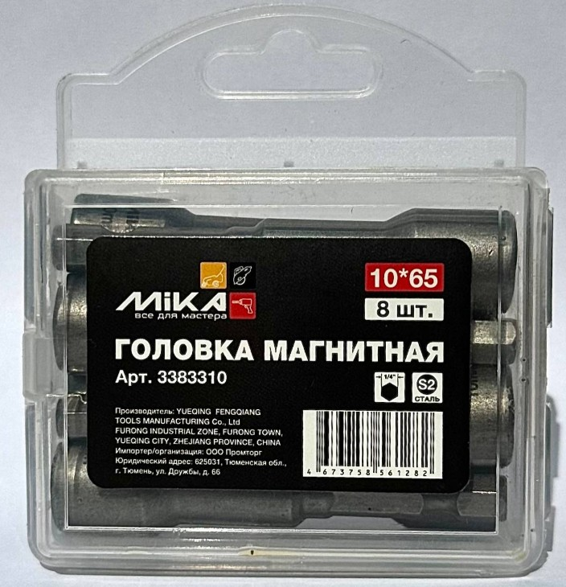
Бита торсионная MIKA PH2х50мм красная (2шт)338331250ТКБита торсионная MIKA PH2х70мм красная (2шт)338331270ТКБита торсионная MIKA PH2х90мм красная338331290ТКБита торсионная MIKA PH2х50мм (поштучно)338331250ТБита торсионная MIKA PZ1х50мм (поштучно)338332150ТБита торсионная MIKA PZ2х50мм (поштучно)338332250ТБита торсионная MIKA PZ2х90мм (поштучно)338332290ТБита торсионная MIKA PZ3х50мм (поштучно)338332350ТБита двухсторонняя MIKA PH2/PH2х65мм коричневая (поштучно)3383312265КБита двухсторонняя торсионная MIKA PH2/PH2х65мм черная (поштучно)3383312265НБита двухсторонняя с магнитным ограничителем MIKA PH2x65мм (поштучно)3383312265МБита MIKA PH2х50мм (поштучно)33833PH250Бита MIKA PH2х70мм (поштучно)33833PH270Бита MIKA PH2х90мм (поштучно)33833PH290Бита MIKA PZ1х50мм (поштучно)33833PZ150Бита MIKA PZ2х50мм (поштучно)33833PZ250Бита MIKA PZ3х50мм (поштучно)33833PZ350Набор бит MIKA 41 предмет3383341Набор бит MIKA 49 предметов3383349Адаптеры для торцовых головок MIKA, 3 предмета 1/4*65,3/8*65,1/2*72338323Головка магнитная MIKA (бита) 10*65 (поштучно)3383310Головка магнитная MIKA (бита) 13*65 (поштучно)3383313Головка магнитная MIKA (бита) 17*65 (поштучно)3383317Головка магнитная MIKA (бита) 8*48 (поштучно)3383308
Паро/гидро/ветрозащита — по узлу. Не путайте стороны укладки.
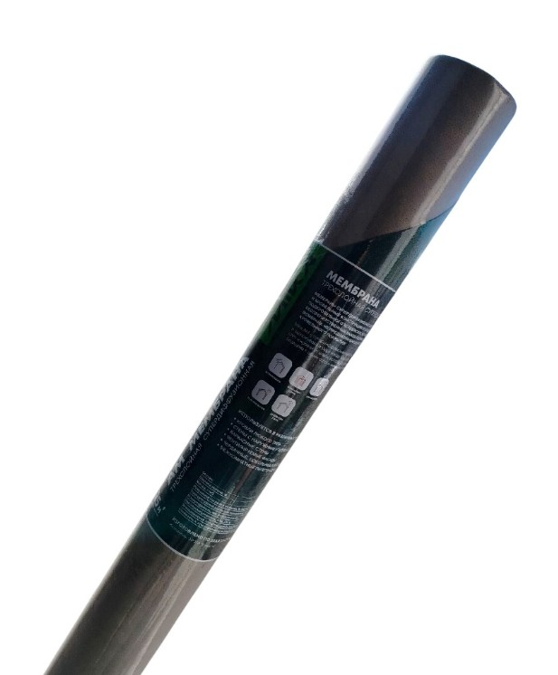
Мембрана трехслойная супердиффузионная Mika AM (гидро-ветрозащита 35м2)33921535Мембрана трехслойная супердиффузионная Mika AM (гидро-ветрозащита, 70м2)33921570Пленка ветро-влагозащита А премиум Mika 90 (35 м2)3392135Пленка ветро-влагозащита А премиум Mika 90(1,6х43,75м), 70м23392170Пленка пароизоляционная В премиум Mika 60 (35м2)3392235Пленка пароизоляционная В премиум Мika 60 (1,6*43,75м) 70м23392270Пленка гидро-пароизоляционная С премиум Mika 70 (1,6*43,75) 70м23392470Пленка гидро- пароизоляционная D премиум Mika 95 (1,6х43.75м), 70 м23392370Пленка гидро- пароизоляционная D премиум Mika 95 (35 м2)3392335
Материал решает тип: сегмент — бетон/кирпич; сплошной/турбо — плитка/керамогранит; Alligator/Grizzly — армированный бетон/гранит. Металл — круги TORRA.
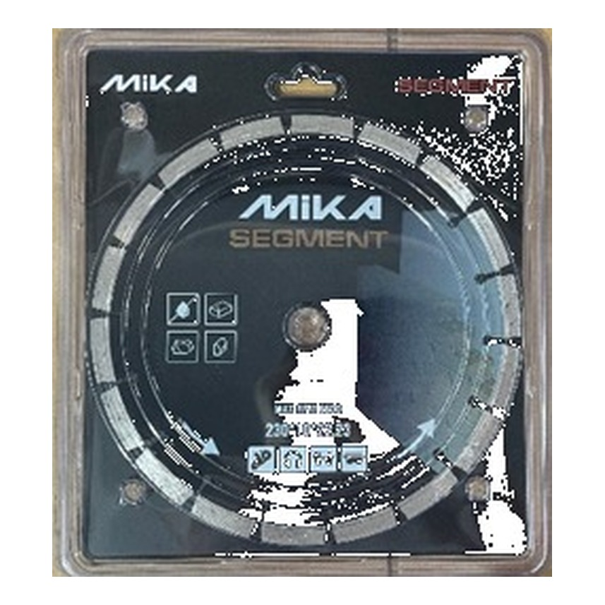
Алмазные диски MIKA
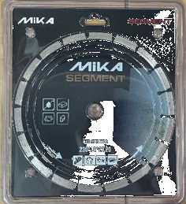
Segment / бетон
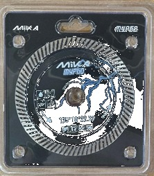
Turbo / универсальный
Диск алмазный отрезной сегментный Mika Segment 230мм338111230SДиск алмазный отрезной cплошной cупертонкий Mika 125мм33812112511Диск алмазный отрезной турбо универсальный Mika 125мм338121125TДиск алмазный отрезной турбо Ceramic Mika 125мм338121125TCДиск алмазный супертонкий отрезной Mika Blade 105мм338131105BДиск алмазный универсальный мультифункциональный Mika Longlife 125м338121125LДиск алмазный сегментированный отрезной по армированному бетону Alligator Mika 230мм338121230AДиск алмазный отрезной турбосегментированный Mika Grizzly 230мм338111230G
Точильные: диаметр круга и нужна ли лампа. Дисково-ленточный — если и круг, и лента.
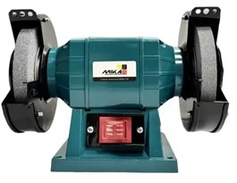
Станок точильный MIKA BGM-125 (125мм, 150вт)3319125Станок точильный MIKA BGM-125L (125мм, 150вт, лампа)33191125LСтанок точильный MIKA BGM-150L (150мм, 150вт, лампа)3319150LСтанок точильный MIKA BGM-200 (200мм, 400вт)33191200Станок точильный дисково-ленточный MIKA BGM-150B (150мм, 250вт, 2950об/мин, 50х686мм)3319150B
Длина рулетки; к ножу — запасные лезвия того же размера (18 / 25 мм).
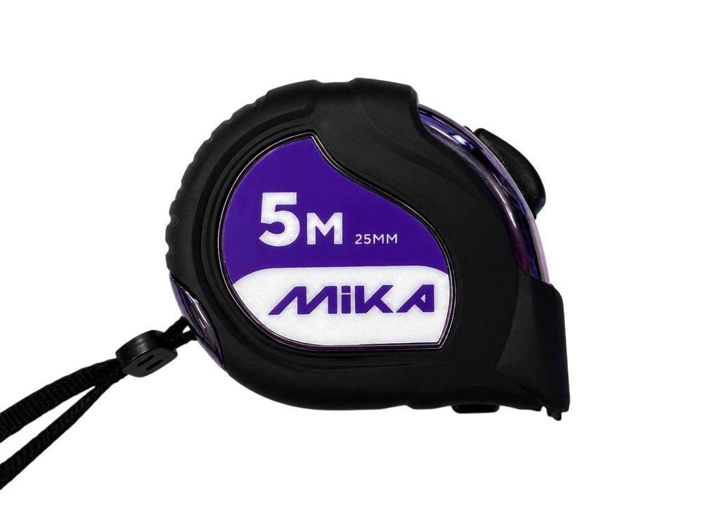
Нож с выдвижным сегментированным лезвием 25мм Mika JH-50733111125Нож с выдвижным сегментированным лезвием 18мм Mika JH-207C33111118Лезвия для ножа сегментированные Mika 18мм D0533111218Лезвия для ножа Mika 25мм H0233111225Рулетка магнитная Mika 3мх16мм JH-365B331123316Рулетка магнитная Mika 5мх25мм JH-565B331123525Рулетка магнитная Mika 8мх25мм JH-865B331123825Рулетка Mika 5м/25мм JH-576331123525М
EFFECT / Prof / STANDART — под интенсивность мойки. Сверьте объём 1 / 5 кг.
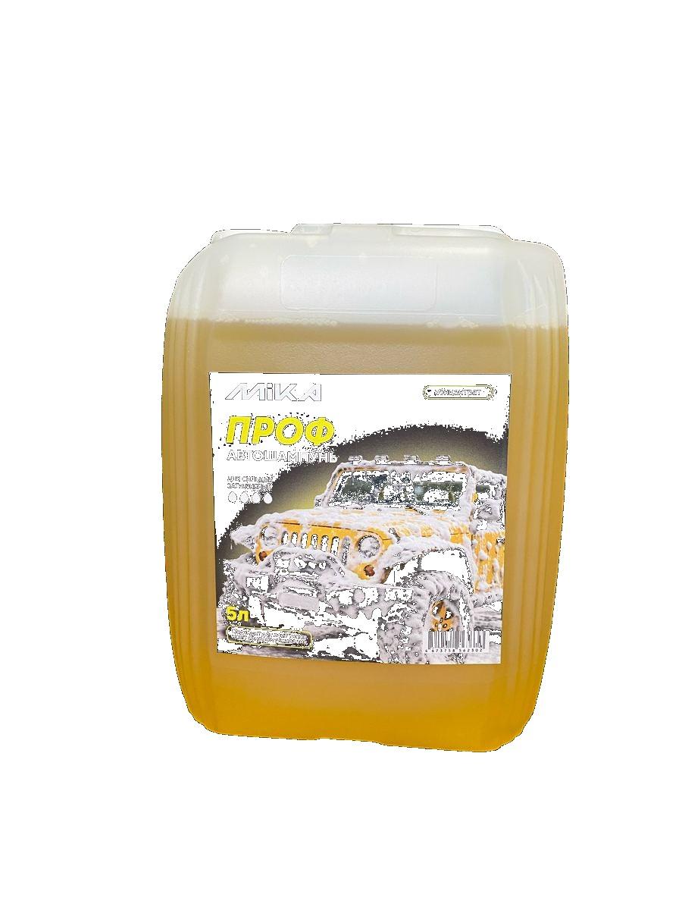
Автошампунь MIKA
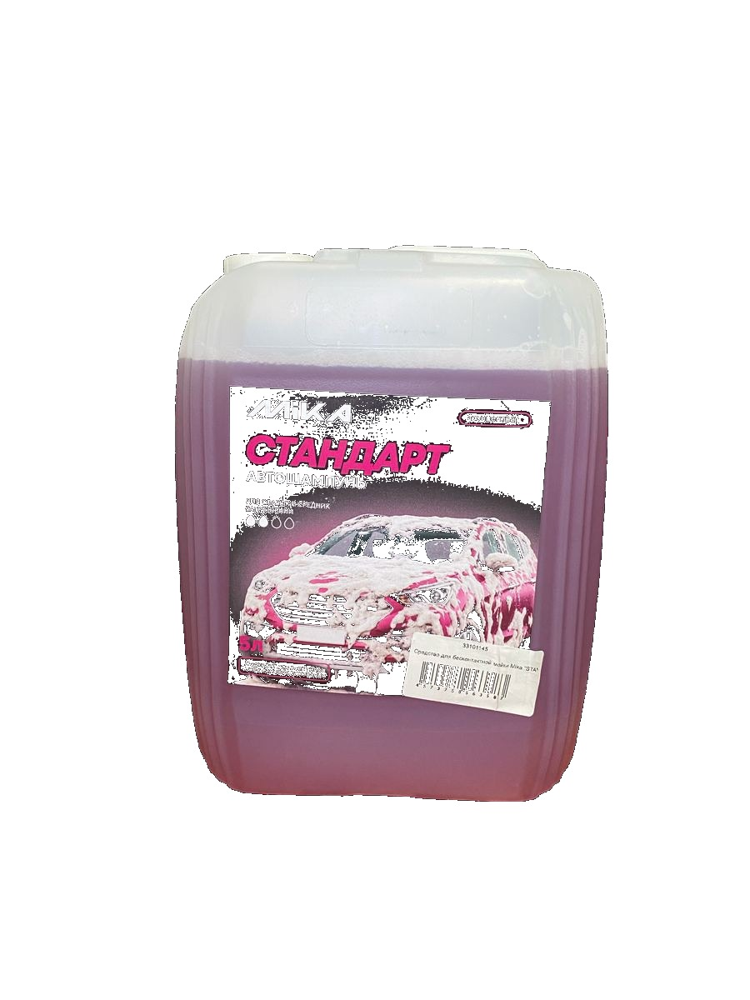
Линейки мойки
Мыло жидкое 5л в ассортименте33000/5Мыло жидкое перламутровое 5л в ассортименте33000/5УСредство для бесконтактной мойки Mika "EFFECT", 1 кг33101111Средство для бесконтактной мойки Mika "EFFECT", 5 кг33101115Средство для бесконтактной мойки Mika "Prof", 1 кг33101121Средство для бесконтактной мойки Mika "Prof", 5 кг33101125Средство для бесконтактной мойки Mika "STANDART", 1 кг33101141Средство для бесконтактной мойки Mika "STANDART", 5 кг33101145
Снеговая морозоустойчивая — для зимы; уточните наличие черенка/рукояти в комплекте.
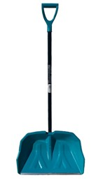
Лопата снеговая морозоустойчивая MIKA3314111
MIKA-46 для ручной дуговой сварки. Сверьте диаметр и фасовку 1 / 5,5 кг под аппарат.
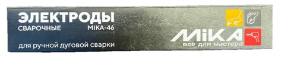
Электроды сварочные Mika MK-46, 1 кг3313111Электроды сварочные Mika MK-46, 5,5 кг33131155
Поливочный армированный 3/4″×25 м, 5 слоёв, морозостойкий. Сверьте фитинги/пистолет полива.
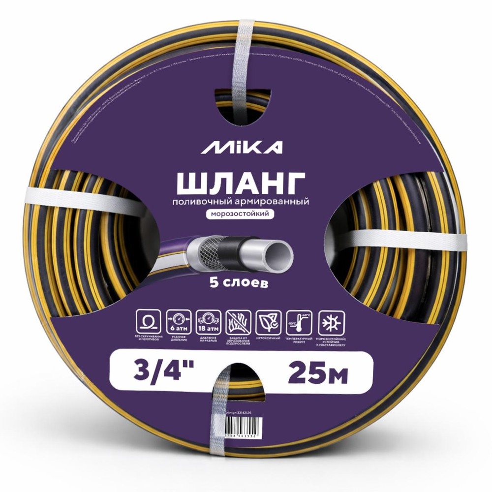
Шланг поливочный Mika армированный 3/4"x25м, 5-слойный, морозостойкий, ТЭП33142125